Nine-year Wilkinson Microwave Anisotropy Probe heat map of
temperature fluctuations in the cosmic microwave background. It shows
the very small temperature variation (from the average) of 1 part in
100000; these ultimately resulted in the galaxies we see
today.
The Cosmic Microwave Background (CMB) radiation, originating
approximately 300,000 years after the Big Bang, is the oldest accessible
signal from the early universe. Discovered by Penzias and Wilson in
1965, its uniformity and blackbody spectrum provide compelling evidence
for the Big Bang theory. The study of CMB offers valuable insights into
the universe’s composition, age, and evolution, aiding in refining
cosmological models and understanding its origins precisely.
CMB anisotropies reflect matter fluctuations during recombination.
Various statistical methods, including power spectrum analysis and
correlation functions, have been employed to study CMB maps. One
promising approach involves quantifying the maps’ morphology using shape
parameters called Minkowski functionals. These descriptors offer
sensitivity to non-Gaussian signatures in temperature fluctuations,
potentially revealing information about topological defects from early
universe phase transitions.
This paper focuses on the excursion sets and isodensity contours of
random fields for Minkowski functional analysis, aiming to enhance our
understanding of CMB morphology and its cosmological implications.
About CMB radiation
CMB power spectrum
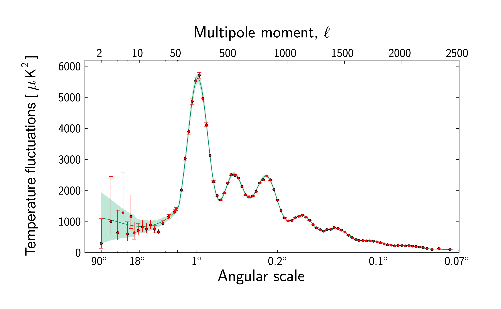
This is the power spectrum which shows the temperature
variation (squared) as a function of multipole moment(l). It is from this graph that many
of the cosmic parameters are derived.
The power spectrum of CMB anisotropies, Cℓ, quantifies the
distribution of temperature fluctuations across different angular scales
ℓ. It is defined as the expectation
value of the square of the spherical harmonic coefficients, aℓm, which
describe the temperature fluctuations on the celestial sphere: $$C_\ell = \frac{1}{2\ell + 1}
\sum_{m=-\ell}^{\ell} |a_{\ell m}|^2$$ The coefficients aℓm are obtained
by decomposing the temperature fluctuations on the CMB sky into
spherical harmonics: $$\Delta T(\theta, \phi)
= \sum_{\ell=0}^{\infty} \sum_{m=-\ell}^{\ell} a_{\ell m} Y_{\ell
m}(\theta, \phi)$$ Here, Yℓm are the
spherical harmonics, and ΔT(θ, ϕ)
represents the temperature fluctuations as a function of the angles
θ and ϕ. The Cℓ spectrum encodes
information about the spatial distribution of temperature fluctuations
on the CMB sky, with peaks corresponding to characteristic angular
scales. For instance, the first peak at low ℓ values corresponds to the largest scales in
the universe, while subsequent peaks represent smaller scales associated
with acoustic oscillations in the primordial plasma.
Minkowski
Functionals
The Minkowski functionals as per reference
Inflationary theories predict Gaussian density perturbations,
manifesting as the Gaussianity of CMB temperature fluctuations. However,
deviations from Gaussianity could indicate alternative mechanisms, such
as topological defects. Even initially, Gaussian fluctuations may
acquire non-Gaussian features due to weak gravitational lensing or
astrophysical foregrounds, especially in high-resolution maps from
missions like MAP and PLANCK. Establishing the Gaussian nature of CMB
signals is vital for both probing inflationary models and optimizing
power spectrum estimation techniques.
Standard tests for non-Gaussianity, like m-point correlation functions, with
computational complexity scaling as O(Nm),
become prohibitively expensive for large datasets. Hence, there’s a need
for efficient statistical tools sensitive to non-Gaussianity, such as
Minkowski Functionals (MFs), which are of order O(N).
MFs, expressed as surface integrals over the whole sphere, offer
insights into the morphological characteristics of CMB temperature maps.
They measure features like the total area of excursion regions enclosed
by temperature contours, total contour length, and genus, providing a
novel approach for CMB data analysis. In previous studies, these
functionals demonstrated sensitivity to non-Gaussian behavior. A good
discussion on the mathematical framework of these equations can be found
in and
.
Vj(Qν) = ∫𝒮2(daIj)
From this, the Minkowski functionals are defined as: $$v_j(Q_\nu) = \frac{V_j(Q_\nu)}{4\pi R^2}$$
We normalize this with a total number of pixels, ν is the temperature threshold, and
u is the field we are dealing
with. $$\begin{aligned}
I_0 &= \Theta(u-v) \\
I_1 &= \delta(u-v) \frac{\sqrt{u_1^2 + u_2^2}}{4} \\
I_2 &= \frac{1}{2\pi} \delta(u-v) \frac{2u_1u_2u_{12} -
u_1^2u_{22} - u_2^2u_{11}}{u_1^2 + u_2^2}
\end{aligned}$$ Here u1 and u11 are the first and
second derivative of θ,
similarly u2 and
u22 of ϕ, u12 is the mixed
derivative. Refer to
for more details on these equations. Additionally, an analytic
expression exists for perfect Gaussian distributions, facilitating the
direct computation of MFs from known statistics like the power spectrum
and bypassing computationally expensive simulations. This approach
enhances the efficiency and significance of morphological analysis in
understanding CMB data. The analytic expression only needs details of
Cl and
l to function, as defined
below. The Minkowski functions constructed using these expressions are
provided in figure 3. $$\begin{aligned}
v_0(v) &= \frac{1}{2} - \frac{1}{2}
\sigma\left(\frac{v-\mu}{(2\sigma)^{1/2}}\right) \\
v_1(v) &= \frac{\tau^{1/2}}{8(2\sigma)^{1/2}}
\exp\left(-\frac{(v-\mu)^2}{2\sigma}\right) \\
v_2(v) &= \frac{\tau}{2\pi^{3/2}(2\sigma)^{1/2}}
\left(\frac{v-\mu}{(2\sigma)^{1/2}}\right)
\exp\left(-\frac{(v-\mu)^2}{2\sigma}\right)
\end{aligned}$$
The analysis utilized the WMAP 9-year dataset from the Lambda
website, provided in a .fits file format. Healpy software
facilitated direct processing of this file, with the resolution
determined by the NSIDE parameter. Initially set at 512, the data was
downgraded to 128 for subsequent analysis. The data utilized RING
ordering. For additional details regarding NSIDE and ordering, refer to
the appendix (5). All skymaps presented here are in
Galactic coordinate projection.
First, the mollviede projection map is made, and then we plotted the
power spectrum. Next, we calculated the derivatives of each point. For
this, we need to convert the map data into spherical harmonics, then
take the derivatives, and again convert this to map data. These were
done using specialised healpy functions.
Now we have all the information to calculate the Minkowski functionals.
We plotted a histogram of the normalized pixel values, which have a
range from -4 to +4. Thus, we have 32 bins of 0.25mK size. This histogram has
information on the distribution of pixels; the minimum x value of each
bin is the threshold. While calculating the Minkowski functionals, we
set the pixels in that particular bin as 1 and the rest of them as 0(In
the masked WMAP data case, this means dealing with two masks
simultaneously. Logical operations from the numpy library were used for
this).
With an aim to reduce the noise, we applied a galactic cut on the
skymap(see figure [fig:masked_moll]). This is because
we expect the maximum noise to originate from the galactic plane. In
this case, we used a 10∘ cut
on both sides of the equator. But this does not bring forth any
significant changes as we expected, although the power spectrum did get
better(comparing figures [fig:pow_spec_no_mask] and [fig:powspecmask]). The same
analysis as we did for the unmasked cases is done here, too; the results
are in figures 4 and 5. The codes
used for this project are uploaded on GitHub.
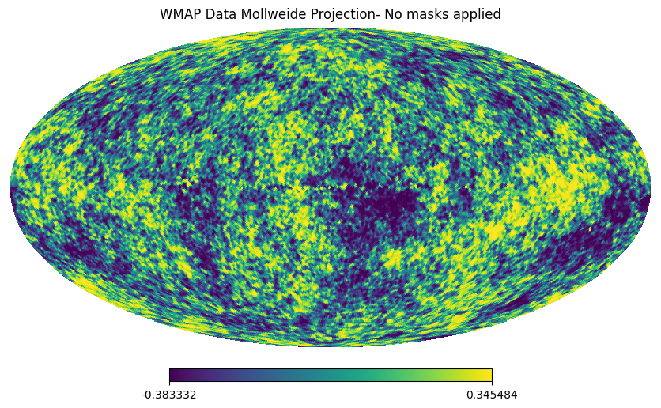
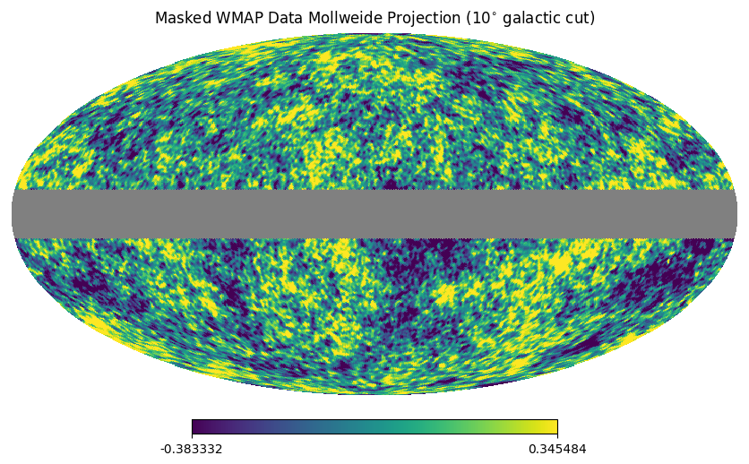
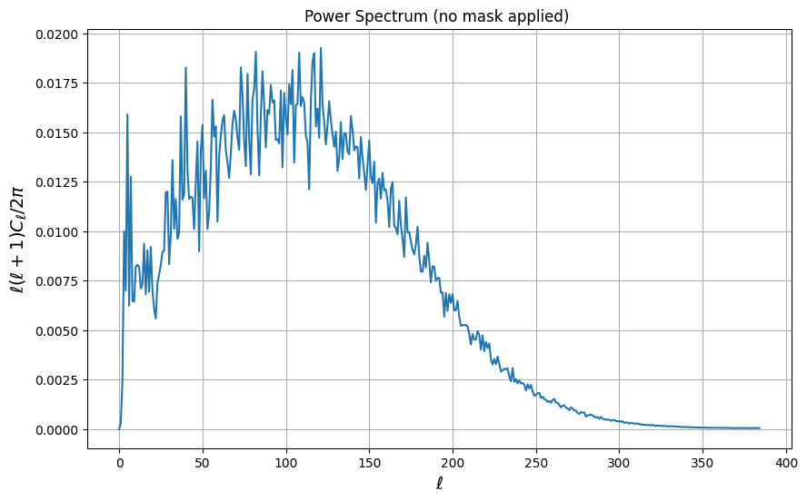
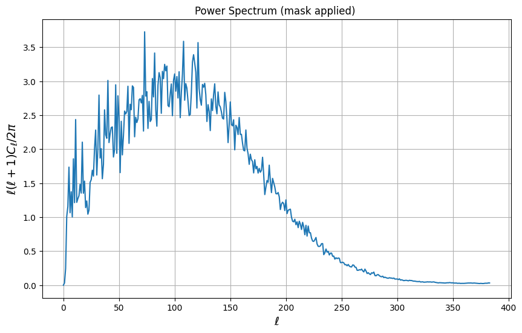
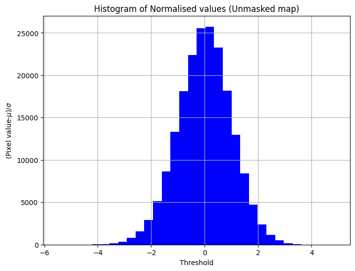
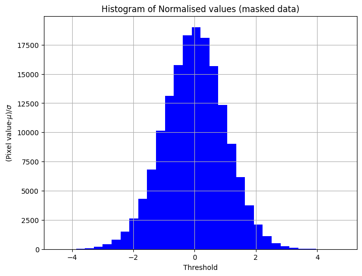
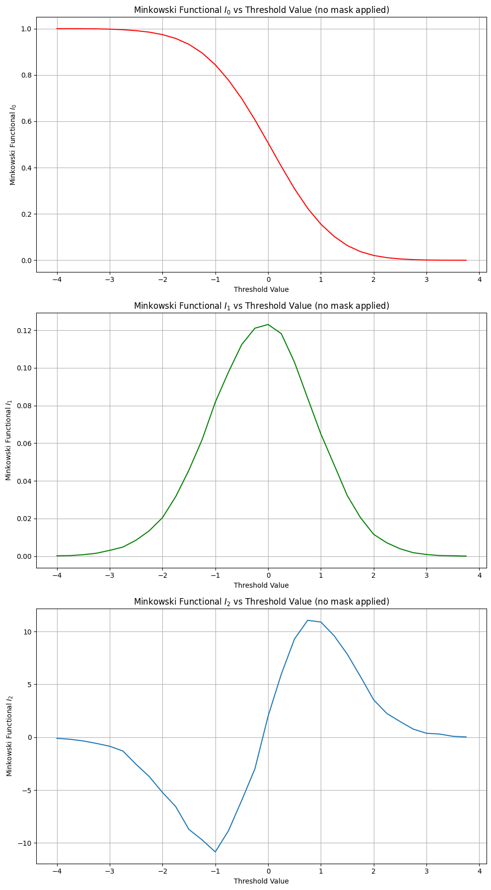
Minkowski functionals calculated for the unmasked data. They
are normalized with the total number of pixels 196608. The threshold is
temperature with units of mK
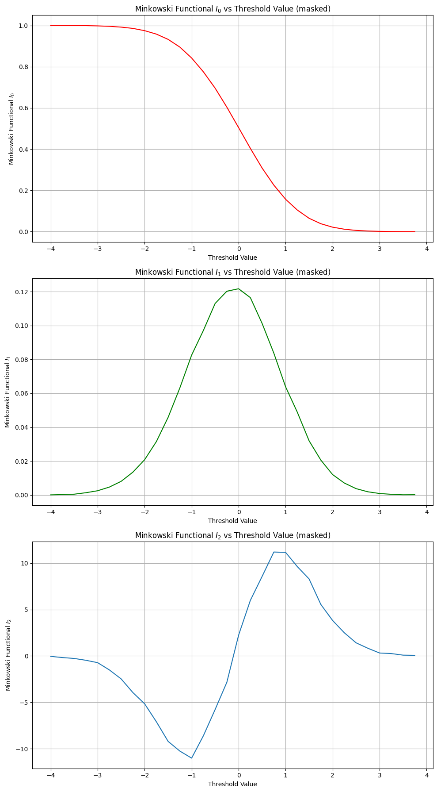
Minkowski functionals calculated for the data after galactic
cut. They are normalized with the total number of pixels, 162304. The
threshold is temperature with units of mK
Simulation
Simulated maps of the cosmic microwave background (CMB) is generated
by using some properties of healpy. The generated maps will be Gaussian
and will have the same NSIDE as our data,128. The process of this
simulation is explained below.
Input Power Spectrum: A power spectrum is provided as the input,
i.e., the Cl value from
our unmasked sky map.
Random Phases: synfast function is healpy‘ generates
random phases for each multipole moment. These phases determine the
relative alignment of the signal across the sky. By assigning random
phases, we introduce realistic fluctuations into the simulated map,
mimicking the randomness observed in real CMB or other spherical
signals.
Inverse Fourier Transform: An inverse Fourier transform is done
on the provided power spectrum and random phases to generate the
simulated map in real space (or pixel space). This involves converting
the signal from its frequency-domain representation (given by the power
spectrum) to its spatial-domain representation (the map).
Pixelization: The simulated map is pixelized onto a grid covering
the sphere.
Output: Finally, a synthetic map is returned as a Healpix map
object, which can be further analyzed or visualized.
On this map, we do both masked and unmasked analysis. A 10∘ galactic cut is similar to what
we did for data is done here, too, for masked analysis.
Then, the Minkowski functionals are calculated using the same
functions we defined for data. The outputs of the simulations are
provided in figures 6 and
7.
One challenge here is the run time; 32 bins and 1000 realizations
mean we are dealing with 1000×32
arrays, that too, three per simulation. We also saved each value of
Cl
generated and maps’ mean and standard deviation. This increases the time
complexity and computational cost. The following steps were taken to
optimize these:
In the calculation of I0 functional, cumulative
data is needed. Thus, if we do that operation from the beginning of the
array, the time complexity is of O(N2). Instead,
we calculate it in each bin, which will be O(N), and then save the
cumulative from the end of the array, again O(N). Thus, we will only
deal with O(N). This
change greatly reduced computation time.
We initialized the plots at the beginning and then plotted each
point as it was generated, but since we still saved each data in each
iteration, this step was ineffective in reducing the time.
The total time the simulation ran was 4.5 hours after
implementing these steps.
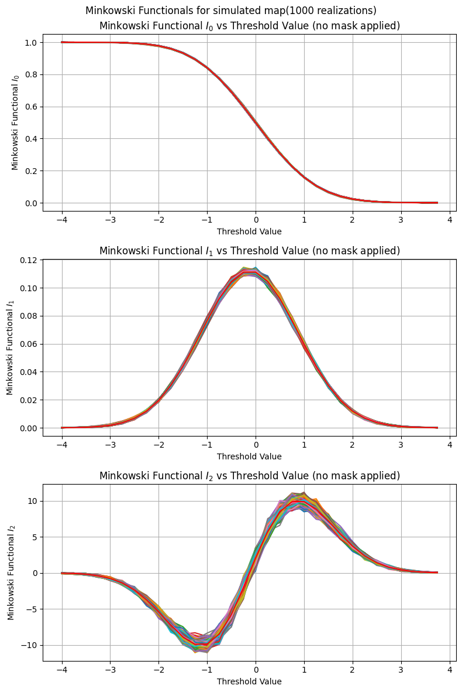
The simulated Minkowski functionals for a synthetic Gaussian
map, over 1000 realizations. The NSIDE of this simulated mask is also
128. The functionals are normalized with the total number of pixels,
196608. The threshold is temperature with units of mK
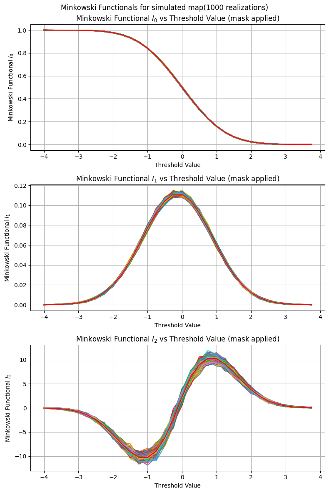
The simulated Minkowski functionals for a synthetic Gaussian
map, over 1000 realizations. Here, we applied the same galactic cut as
the one used for the WMAP data. The NSIDE of this simulated mask is also
128. The functionals are normalized with the total number of pixels,
196608. The threshold is temperature with units of mK
Statistical analysis
Finding the slight
non-Gaussianity
In a normal distribution, about 68%
of the data falls within one standard deviation (±σ) of the mean, about 95% falls within two standard deviations (±2σ), and about 99.7% falls within three standard deviations
(±3σ). When we refer to a
3σ confidence limit, we mean
that we are considering a range of values that spans three standard
deviations from the mean. In other words, we are looking at a range that
includes approximately 99.7% of the
data if it were normally distributed.
Thus if the data falls outside the 3σ confidence limit, it suggests that
the observed values are unlikely to occur by random chance alone if the
data were indeed normally distributed. This deviation from the expected
range may indicate the presence of non-Gaussian behavior in the dataset.
Conversely, if the data falls within this range, it suggests that the
observed values are consistent with what we would expect from a normally
distributed dataset.
We concluded that the unmasked data have a slight non-gaussianity
because it did not come within the 3σ confidence range of perfectly
Gaussian simulated results. The plots from which we can conclude this
are given in figures [3],[4],[5], and [6](in all cases, the x-axis is in units of mK). A similar analysis is
done in .
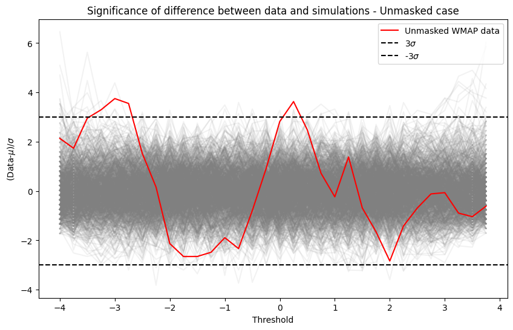
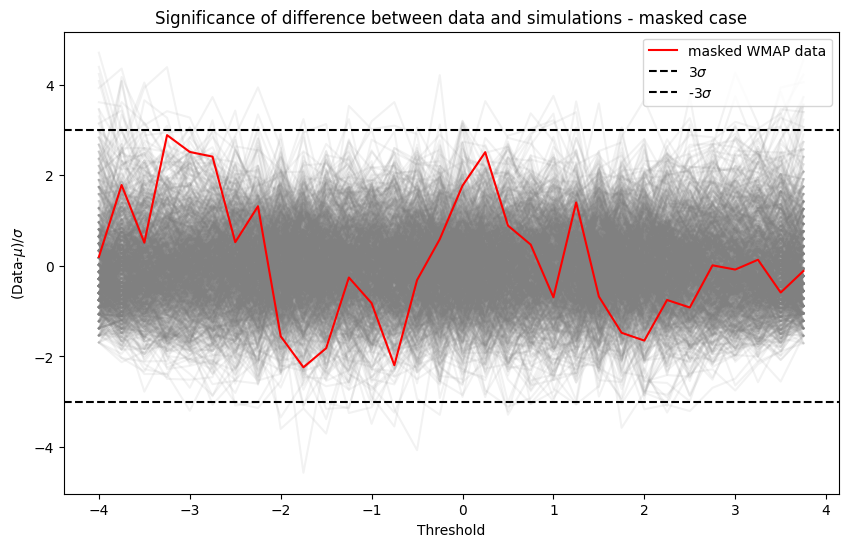
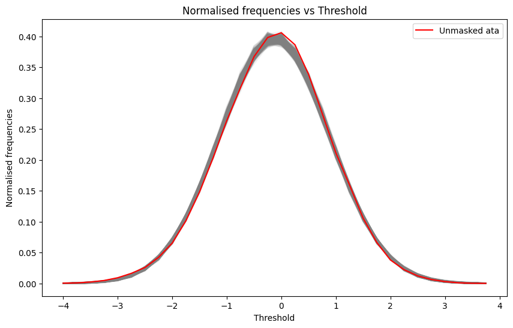
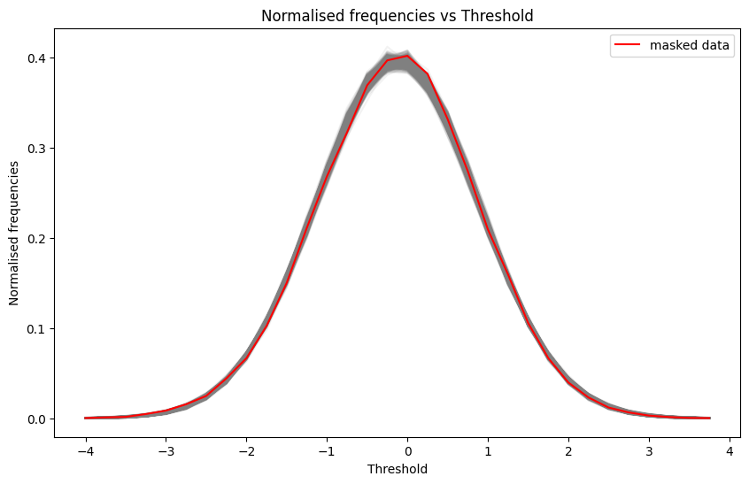
Fitting with analytic
expression
Next, we fit the simulations and data with the analytic function for
Minkowski functionals of a Gaussian field. The simulations fit
perfectly. This means that for a Gaussian field, we do not need to do
simulations for analysis, given the power spectrum (Cl) and
multipole moment (l), we can
directly get the Minkowski functionals from that, skipping all the steps
in between like taking derivatives. Thus, we prove the validity and
significance of analytic expressions Next, we tried fitting data before
and after masking with the analytic plot. The expected result was that
the unmasked data would give a bad fit, but on the contrary, masked and
unmasked gave a similar fit. I tried performing a few goodness-of-fit
tests, but they were inconclusive. The fits are given in figures 11 and 10.
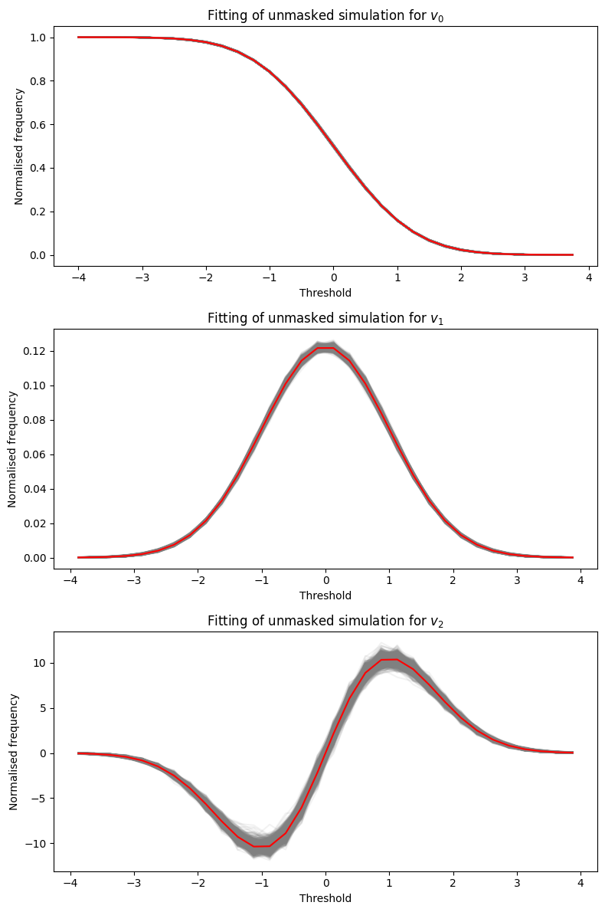
Fitting of unmasked simulation with the analytic expression
for Minkowski functionals. The grey line is the simulation, and the red
line is the analytic expression. The threshold is temperature with units
of mK
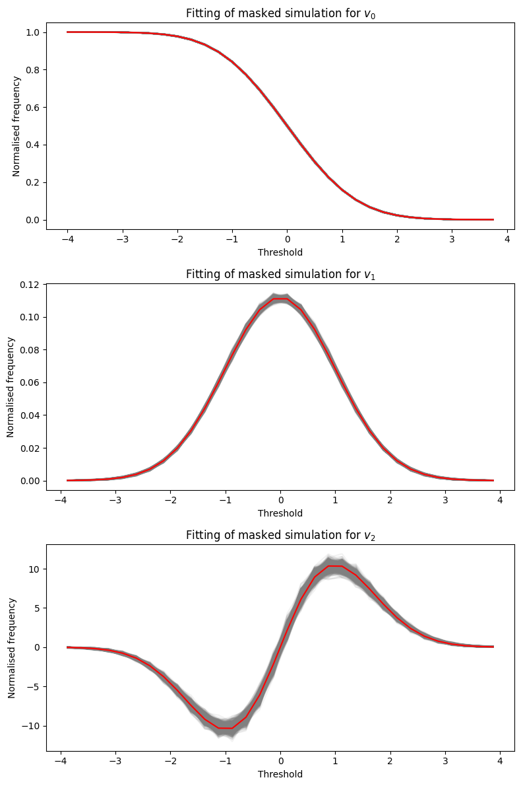
Fitting of masked simulation with the analytic expression
for Minkowski functionals. The grey line is the simulation, and the red
line is the analytic expression. The threshold is temperature with units
of mK
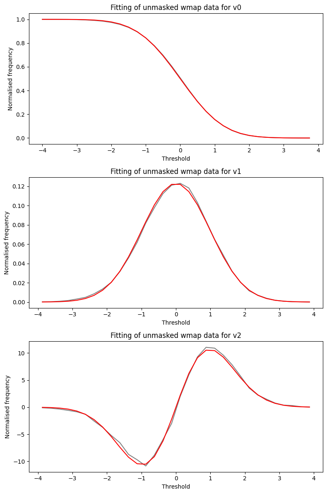
Fitting of unmasked data with the analytic expression for
Minkowski functionals. The grey line is the data, and the red line is
the analytic expression. The threshold is temperature with units of
mK
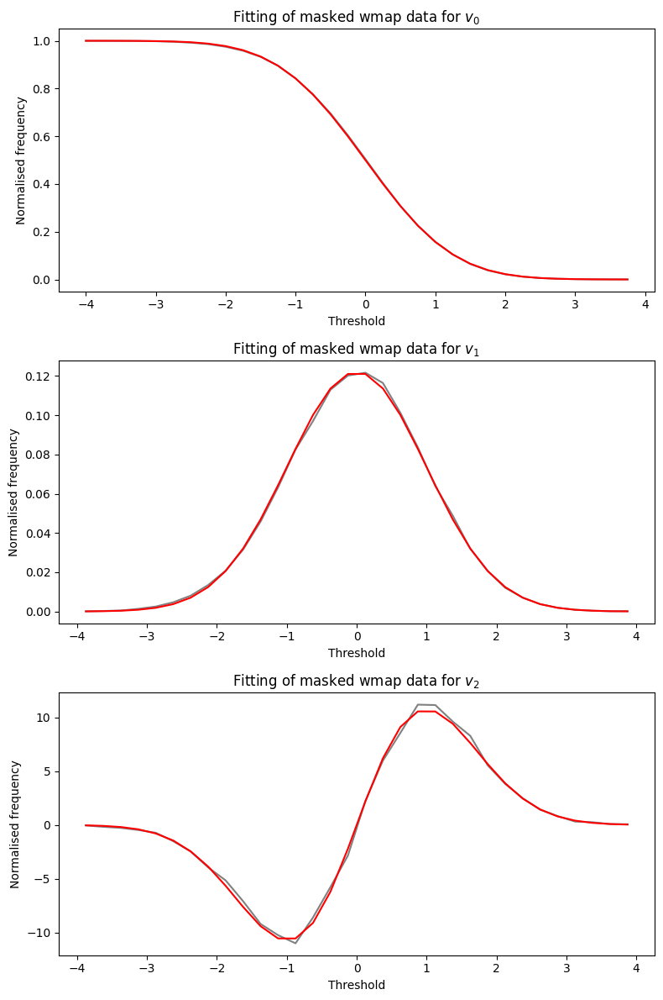
Fitting of masked data with the analytic expression for
Minkowski functionals. The grey line is the data, and the red line is
the analytic expression. The threshold is temperature with units of
mK
Results and Conclusions
Our analysis begins with exploring the Minkowski functionals
(MFs) applied to cosmic microwave background (CMB) maps, utilizing both
real observational data and simulated maps. Key visualizations,
including mollweide projections, power spectra, and histograms of pixel
values, are depicted in Figures [fig:moll_no-mask], [fig:masked_moll], [fig:pow_spec_no_mask], [fig:powspecmask], [fig:hist_nomask], and [fig:hist_masked]. Implementing a
galactic cut and masking procedures reduces noise levels, although the
overall morphology remains largely consistent.
Subsequently, we simulated 1000 synthetic maps to analyze the
corresponding Minkowski functionals, representing the most
computationally challenging aspect of this study. 1000 realization
simulations were done to generate masked and unmasked maps.
Statistical analyses were then conducted to assess the
Gaussianity of the CMB signals. By comparing the Minkowski functionals
of real CMB data with those of simulated Gaussian maps, slight
deviations from Gaussian behavior were observed in the unmasked data.
Figures [3], [4], [5], and [6] demonstrate how the unmasked data falls
beyond the 3σ confidence
limit, indicating non-Gaussian behavior. Conversely, masked data
strongly agreed with simulated Gaussian maps, suggesting a higher degree
of Gaussianity
An important finding of our study is that the analytic expression
available in the literature accurately encodes the Minkowski functionals
for a Gaussian distribution. This revelation simplifies the analysis
process significantly, eliminating the need for repetitive derivations
of masks and simulations. Consequently, the Minkowski functionals become
an even more powerful tool for analyzing CMB maps.
Furthermore, we conducted fitting procedures for both simulated
and real data using analytic expressions for the Minkowski functionals
of a Gaussian field. While the simulated data exhibited excellent fits,
discrepancies were observed in the unmasked real data, as shown in
Figures 10 and 8. Surprisingly, similar fitting
results were obtained for the masked real data, contrary to initial
expectations.
HEALPix software and healpy
HEALPix(short for Hierarchical Equal Area isoLatitude Pixelization)
is a sophisticated scheme that handles pixelated data on the celestial
sphere efficiently. Developed initially to analyze cosmic microwave
background (CMB) data from cosmological experiments, Healpix has become
indispensable across various branches of astrophysics, especially for
all-sky surveys.
Healpix partitions the sphere hierarchically into curvilinear
quadrilaterals. Starting with 12 base pixels, the resolution increases
as each pixel divides into four new ones. This hierarchical tessellation
ensures that areas of all pixels at a given resolution are equal.
Additionally, pixels are distributed along the lines of constant
latitude, facilitating harmonic analysis applications involving
spherical harmonics .
A Healpix tessellation is defined by a parameter known as NSIDE, which
represents the resolution of the pixelization. NSIDE must have a
positive power of 2. This parameter determines the number of pixels,
denoted as N, in the maps generated by the tessellation. The
relationship between NSIDE and the number of pixels, N, is given by the
equation N = 12 × NSIDE2.
Essentially, NSIDE controls how finely the sphere is divided into
pixels. A higher NSIDE value results in more pixels and, thus, a finer
resolution of the pixelization. Conversely, a lower NSIDE value leads to
fewer pixels and a coarser resolution. This parameter plays a crucial
role in determining the level of detail in the analysis of spherical
data, such as cosmic microwave background maps .
Healpix supports two different ordering schemes, RING or NESTED. By
default, healpy maps are in RING ordering. First, in the RING scheme,
one can simply count the pixels moving down from the north to the south
pole along each iso-latitude ring. It is in the RING scheme that Fourier
transforms with spherical harmonics, which are easy to implement.
Second, in the NESTED scheme, one can arrange the pixel indices in
twelve tree structures corresponding to base-resolution pixels. The
mollviede projections of RING and NESTED ordering is given in figures 12 and
13.
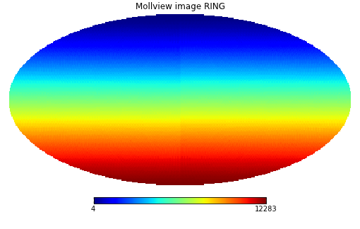
RING ordering in mollview.
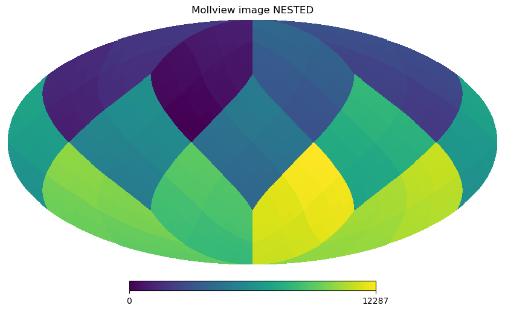
NESTED ordering in mollview.
Healpy is a Python package built upon the Healpix scheme, which
provides a comprehensive set of utilities for handling pixelated data on
the sphere. It offers functionalities such as:
Conversion between sky coordinates and pixel indices in nested
and ring schemes.
Identification of pixels within specific regions of the sky, like
disks, polygons, or strips.
Coordinate transformations between different reference frames
(Galactic, Ecliptic, Equatorial).
Reading and writing HEALPix maps to disk in FITS format.
Visualization of maps in various projections, including
Mollweide, Gnomonic, and Cartographic.
Computation of Auto and Cross Power Spectra from maps.